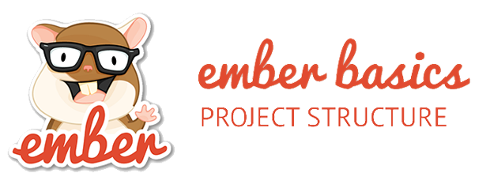

Backbone.js es el framework preferido por muchos. En todos lados escucharás que están hablando de Backbone, muchas empresas importantes lo están utilizando. Esté framework lo conocí por primera vez hace unos 2 años cuándo trabajaba en Softtek y ahora de nueva cuenta lo estoy retomando en la empresa actual que trabajo.
Ventajas: La comunidad es fuerte y está creciendo bastante. Underscore.js (que se utiliza en gran medida) es también un gran framework.
Desventajas: Carece de abstracciones fuertes y deja mucho que desear. El framework entero es sorprendentemente ligero y da lugar a que sea repetitivo. Cuanto más grande es una aplicación, más se hace evidente.
Prototype es un framework que facilita el desarrollo de aplicaciones web con JavaScript y AJAX. Su autor original es Sam Stephenson, aunque las últimas versiones incorporan código e ideas de muchos otros programadores. A pesar de que incluye decenas de utilidades, la librería es compacta y está programada de forma muy eficiente.
Ext JS (pronunciado como "ekst"1 ) es una biblioteca de JavaScript para el desarrollo de aplicaciones web interactivas usando tecnologías como AJAX, DHTML y DOM. Fue desarrollada por Sencha.
Originalmente construida como una extensión de la biblioteca YUI por Jack Slocum, en la actualidad puede usarse como extensión para las biblioteca jQuery y Prototype. Desde la versión 1.1 puede ejecutarse como una aplicación independiente.
Nos parece que Ember.js es un framework súper interesante al que no conviene perder de vista. Se basa en una filosofía de Convention over Configuration (que traduciremos por algo equivalente a “seguir las convenciones en vez de configurar”), lo que permite al framework asumir de forma automática muchas tareas que en otros frameworks nos tocaría programar explícitamente.
